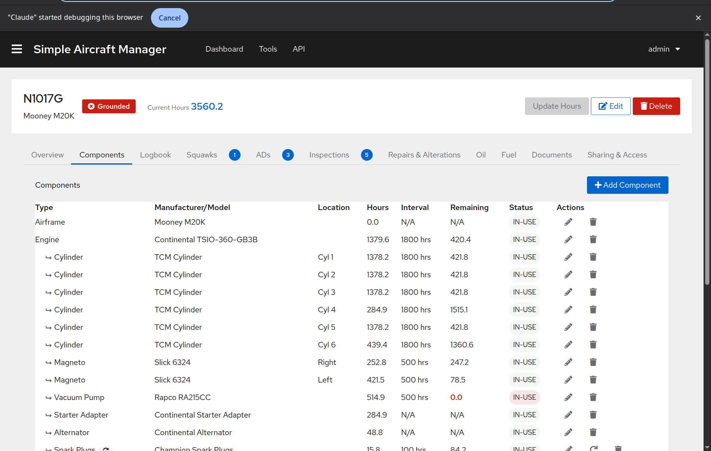

Components¶
The Components tab tracks all installed parts and assemblies on the aircraft, along with their service intervals and remaining life.
{kind=link}
Component List¶
Components are displayed in a table with the following columns:
Type – The component type (e.g., Engine, Oil Filter, Propeller). Child components are indented under their parent to show hierarchy. Replacement-critical components show a purple sync icon.
Manufacturer/Model – The part manufacturer and model number.
Location – Where the component is installed (e.g., “Left engine”).
Hours – Current hours on the component (in-service or since overhaul, depending on tracking mode).
Interval – The service interval in hours.
Remaining – Hours remaining until the next service action. This value changes color as it approaches zero:
Green when well within limits.
Orange when within 10 hours of the limit.
Red when overdue.
Status – The component status (IN-USE, REMOVED, etc.).
Actions – Edit, reset service, or delete buttons (owners only).
Adding a Component¶
Click Add Component in the top right.
Select a Component Type from the dropdown. If the type you need does not exist, ask an administrator to create it.
Fill in the component details:
Manufacturer and Model – The part manufacturer and model/part number.
Serial Number – Optional serial number for tracking.
Install Location – Where the part is installed.
Parent Component – Optional. Select a parent to create a hierarchy (e.g., an oil filter under an engine).
Status – Typically “IN-USE” for installed components.
Configure tracking mode(s). A component can use one or more of these independently:
Replacement Critical – For parts replaced on a schedule (oil, filters, spark plugs). Set the Replacement Hours interval and the current Hours in Service.
TBO Critical – For parts with a Time Between Overhaul limit (engines, propellers). Set the TBO Hours and current Hours Since Overhaul.
Inspection Critical – For parts requiring periodic inspections. Tracked via the Inspections system.
Click Save.
Resetting Service¶
When you replace a consumable part (oil change, filter replacement), you need to reset its service time:
Find the component in the table.
Click the reset button (circular arrow icon) in the Actions column. This button only appears for replacement-critical components with status “IN-USE”.
Confirm the reset.
This resets the component’s Hours in Service to zero and updates the Date in Service to today. It does not reset Hours Since Overhaul – that field is only reset during a major overhaul.
Editing and Deleting¶
Click the pencil icon to edit a component’s details.
Click the trash icon to delete a component. This action cannot be undone.
Component Hierarchy¶
Components can be organized in a parent-child hierarchy. For example:
Engine (Lycoming O-360)
├── Oil Filter
├── Spark Plugs (Top)
└── Spark Plugs (Bottom)
Child components are visually indented in the table with an arrow indicator. When you set a parent component, the child appears nested beneath it.